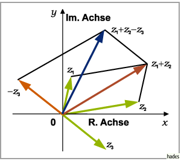

Addition und Subtraktion
Addition und Subtraktion zweier oder mehrerer komplexer Zahlen sind in der algebraischen Schreibweise durch die Formel
definiert. In der geometrischen Interpretation werden zur Summen- bzw. Differenzbildung die Vektoren der betreffenden komplexen Zahlen addiert bzw. subtrahiert (s. Regeln der Vektorrechnung).
